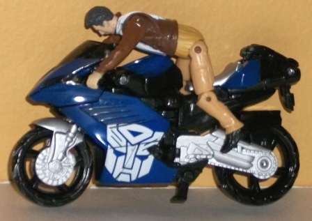
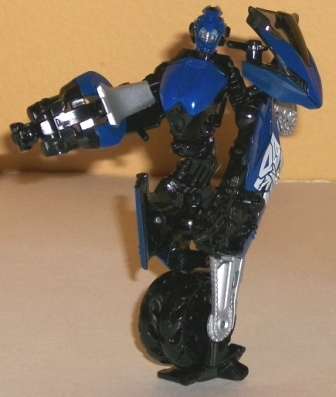
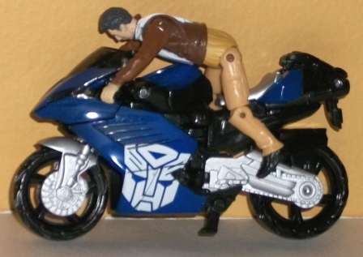
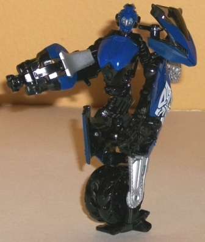
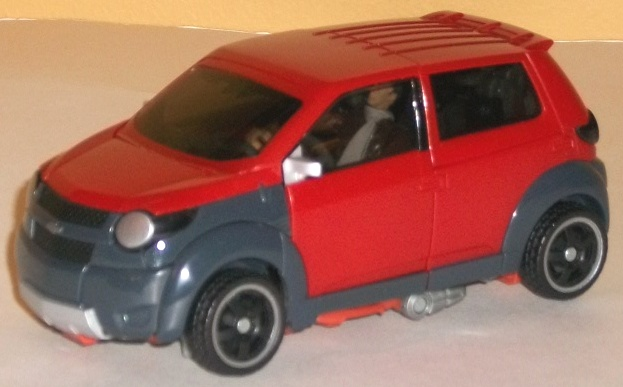
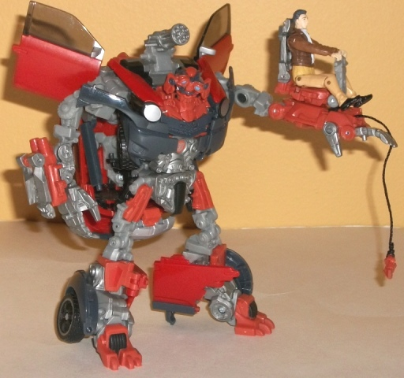

 
Allegiance : Autobot
Difficulty of Transformation : Medium
Color Scheme : Black, dark blue, and some silver, white, light sky blue, and tinted clear plastic
Individual Rating : 7.2
 Chromia
Chromia


Allegiance
: Autobot
Difficulty of Transformation
: Medium
Color Scheme
: Black, dark blue,
and some silver, white, light sky blue, and tinted clear plastic
Individual Rating
: 7.2
Just like the mess-up
with
Human Alliance Arcee
, Chromia has the
correct color scheme-- but the body of one of her sisters (in this case,
Arcee)! That's kind of a big thing to overlook, but if you can the motorcycle
mode DOES look pretty good in dark blue, silver, and black. I wish the
blue were just a tad lighter to provide a bit more of contrast against
the black-- the silver does a nice job, but there's not quite enough of
it, methinks. The white also is a nice contrast color, but I wish it was
used for a more interesting design than just two big cut-off Autobot symbols.
For being such a small toy (smaller than a scout, larger than a Legend),
Chromia has a remarkably accurate vehicle mode. Most of the proportions
are pretty spot-on, though one of her arms is a bit visible on one side
of this mode. (Not as visible as you think it would be, though, since it's
a black piece of plastic mostly surrounded by other black pieces of plastic.)
The robot head is also a little visible behind the windshield, but the
tinted plastic helps keep it from being too obvious. As you'd expect from
a Human Alliance figure, Chromia can have Agent Simmons (or any other Human
Alliance human figure) ride her, so long as their hands are around her
handlebars. There's unfortunately no slot to keep their bodies secure on
the seat, unlike in larger Human Alliance figures, and they look kinda
awkward riding her, as you can see above. (Simmons, by the way, has all
the standard movement of any Human Alliance figure, and the detailing is
pretty good-- his face is surprisingly accurate.)
Chromia has a simplified
version of
deluxe Arcee's
transformation,
so her robot mode as many of the same positives and negatives (though parts
can pop off often due to transformation due to its tiny-ness-- they're
fairly easy to just pop back on though). It's a design so unique you're
either going to hate it or love it-- I quite like it, myself. The serpentine
waist is a bit shorter on Chromia here, which is to me a good thing, and
there's a flat stand connected to one of her wheels so that she can stand
up by herself. The mold detailing is also remarkable for such a small figure,
having as many little mechanical details and whatnot molded in there as
you'd expect from a toy two-to-three times her size. Unfortunately, the
pieces of the motorcycle mode are even more burdensome in robot mode than
on deluxe Arcee, due to the aforementioned simplified transformation. There's
BIG panels of her motorcycle mode hanging off his right arm and shoulder
and half of her wheel uni-leg. Her left arm also has a hard time bending
at the elbow because of the big seat that makes up her lower arm (though
at least a molded-in claw panel folds out so that she actually has a hand
on that arm too). As far as articulation, it's pretty impressive for a
toy this small-- Chromia can move at the neck (at two points), shoulders
(at two points), elbow (on the left arm-- but it's a bit restricted, as
mentioned), and waist (at four points).
 Mudflap
Mudflap


Allegiance
: Autobot
Difficulty of Transformation
: Very
Hard
Color Scheme
: Dull glittery pumpkin
orange, dark gray, light milky gray, tinted clear plastic, moderately light
orange, and some silver, light red, light sky blue, and black
Individual Rating
: 9.5
Mudflap's Chevy Trax
vehicle mode is reproduced pretty darn authentically on this Human Alliance-scale
toy-- as you'd hope it would be, at this pricepoint. There's really only
two minor robot mode extras in this mode-- the tips of Mudflap's feet can
be seen from a fear view, and unless you're looking at the vehicle mode
from an angle that's pretty much top-down, the thumb of his larger hand
sticks out a bit underneath the bottom rim. If you look carefully inside
his tinted windows, you can see some other parts inside there, but it's
tinted so dark that it's not really an issue. As you'd expect from a Human
Alliance figure, both of Mudflap's doors open, and a human figure from
the line can sit snugly in either of his seats. There's not much else to
tell about this mode that you wouldn't expect-- anything stays together
pretty solidly, but at this scale the color scheme is a tad boring (and
the orange is just a touch darker than on most other RotF Mudflap toys).
It's certainly accurate though, I can't fault them for that-- me, I just
like a couple more colors that pop out.
Mudflap's transformation
is nearly identical to
Human Alliance Skids'
,
so many of my comments on his robot mode are carried over from Skids'.
See my review on Skids for general design comments-- here I'll cover the
features specific to Mudflap's design. The major difference is how the
chest and shoulders transform-- with Mudflap here it's a slightly more
complicated affair, as unlike Skids his wheels sort of "disappear" on his
show model, whereas Skids' were just on his shoulders. Thus Mudflap's wheel
bit sort of collapse into his chest a bit, sort of exchanging places with
the shoulders. It means no visible wheels, but comes at a price-- the "transfer"
is a bit difficult to do without accidentally popping the wheel pieces
out on their ball joints, and they're rather hard to pop back in. Also,
Mudflap's shoulders seem overly skinny without bits of the car mode on
them to bulk them up a bit. Unlike Skids, however, Mudflap's car doors
above his shoulders are actually movie model-accurate, so they're not the
downsides here that they were on Skids (though humorously enough, Mudflap's
door-flaps are considerably smaller than Human Alliance Skids'). The other
main difference is, of course, that the "larger" of the two arms is flipped
on Mudflap. Although both lower arms can hold a human figure in a seat,
Mudflap's "large hand" gimmick is that a small pointed bit-on-a-string
can be pulled out and reeled back in with the little crank on the side
of said hand. It's a pretty cool gimmick, and more impressive than Skids'
simple spring-loaded missile firing gimmick. Apart from these two differences,
Mudflap's features and transformation are pretty much identical to Skids'--
though every piece is different, so they are in no way remolds of each
other. Mudflap definitely has some excellent mold detailing all over his
body-- little pistons and hinges everywhere that you'd please. The way
part of his chest is from the actual car mode while part of it is "fake"
for the robot mode is integrated very well, and looks very nice. Mudflap's
face sculpt is accurate, though I hate his face, so... ick. By pressing
down on the top of his head he can "talk", just like his twin Human Alliance
brother. The addition of light gray and some silver to the color scheme
helps to break up Mudflap and keep him SLIGHTLY less boring in terms of
colors, but just barely-- it's still hardly an exciting color scheme. What's
interesting is that his robot mode orange parts don't quite match his vehicle
mode orange parts, though, as his vehicle mode orange is a bit deeper and
more red. A bit more color variety's good though, in my opinion. Articulation-wise
Mudflap is almost the exact same as Human Alliance Skids-- he can move
at the neck, shoulders (at three points), elbows (at two points), the wrist
on his left arm, the base of the thumb and the base of his fingers (the
latter all as one piece) on his right arm, and at the waist, hips (at two
points), knees (at three points), and a bit at the ankles. So he's got
one less area of movement at the knees, but one more at the shoulders.
All works out to me.
I'd recommend Human Alliance
Mudflap w/ Chromia over Mudflap's twin Human Alliance brother Skids, but
that's mainly because of the smaller motorcycle TF they both come with.
Skids' partner Arcee is pretty bad, while Mudflap's partner Chromia is
noticeably better. As far as the "main attraction" goes, I think Human
Alliance Mudflap is slightly worse than Human Alliance Skids-- due to the
difficulty of the aforementioned shoulder/wheel swap during transformation,
and Mudflap's slightly more boring color scheme-- but given that they're
both the same basic design, they're both still great toys. Highly recommended
regardless, and the version of RotF Mudflap I'd recommend the most.
Review by Beastbot